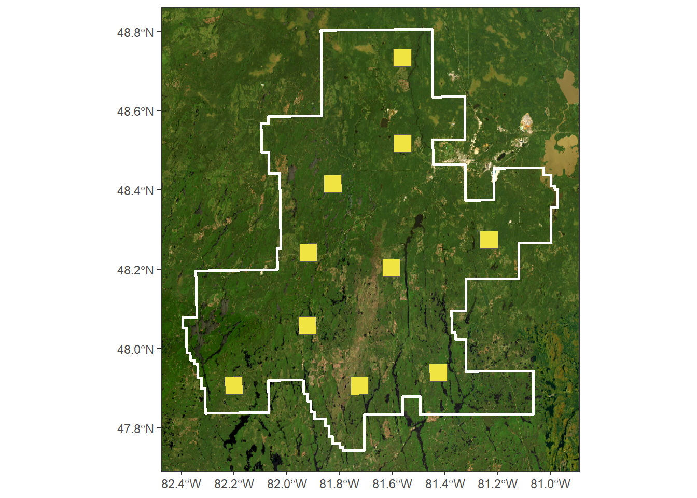
Optimal Generic Region Merging parameters
Introduction
This document shows the step to find the optimals parameters of the Generic Region Merging (GRM) algorithm of the Orfeo ToolBox to automatically delineate operationally plausible forest stand. photo-interpreted forest inventory map of the same area are the reference data. The optimization is performed on the Symmetric mean absolute percentage error (SMAPE) of polygon density, the overlapping kernel density of the polygon stand area at the pixel level and the overlapping kernel density of the polygon stand shape index at the pixel level. Best parameters were computed for two specific forest and five differents models, but performance metrics can be averaged to find best paramaters that suit the prefered scale.
Sampling area
In this example, the evaluated forest is located in the province of Ontario, in Canada. Romeo Malette Forest and are located in the middle of the province and is conniferous. Ten smaller squares area of 5 km x 5 km were used to perform subsequent analysis.
To position theses area, only actual forest stand (POLYTYPE == “FOR”) have been retain.
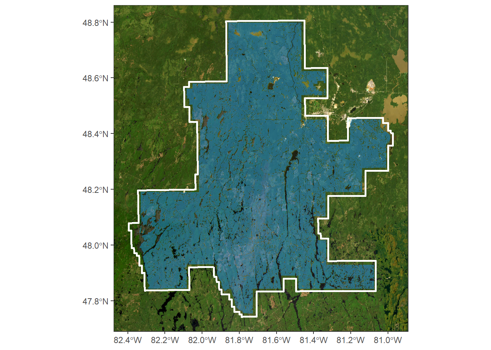
A positive buffer of 500 m and then a negative one of 500 m again enable to merge close forest stand.
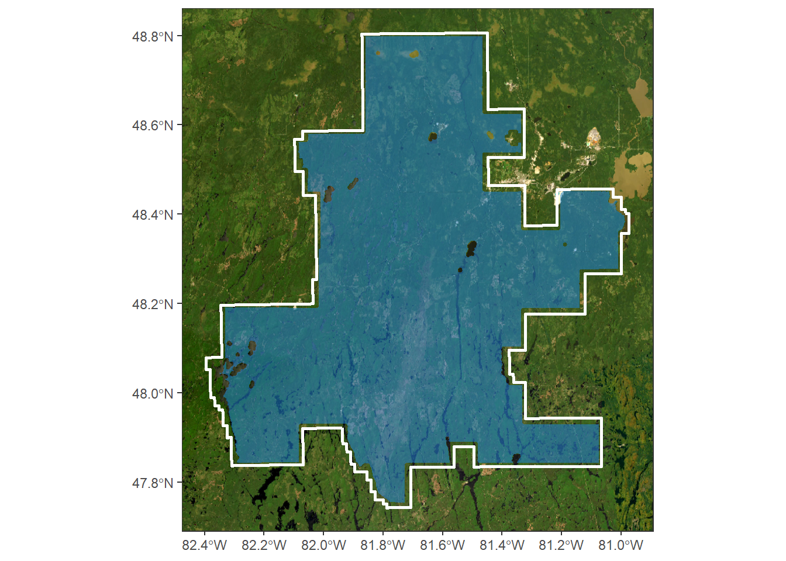
A final inner buffer of approximately 7000 m was use to produce final polygon that allowed to place the center of each area.
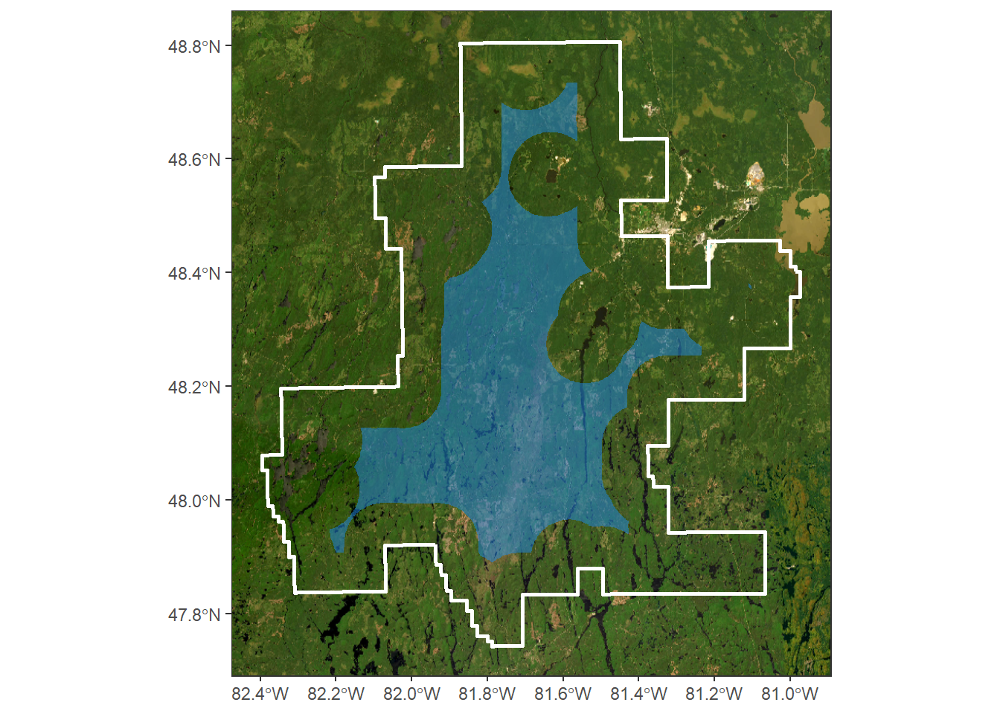
The first area was placed randomly and then the 9 next one were iteratively placed as far as possible of the last placed one. The next figure shows the last placed area in red and the distance raster that enable to fin the farthest position.
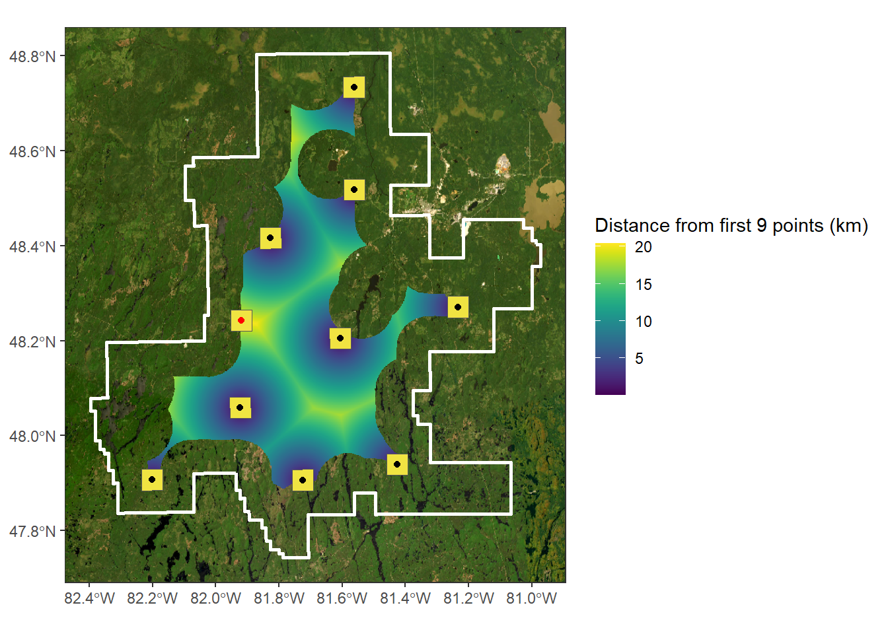
For every area, only actual forest stand (POLYTYPE == “FOR”) were used to perform segmentation.

Segmentation
The model “SPL only” was used to perform segmentation parametrization. The metrics used in this model are shown in the follow figures.
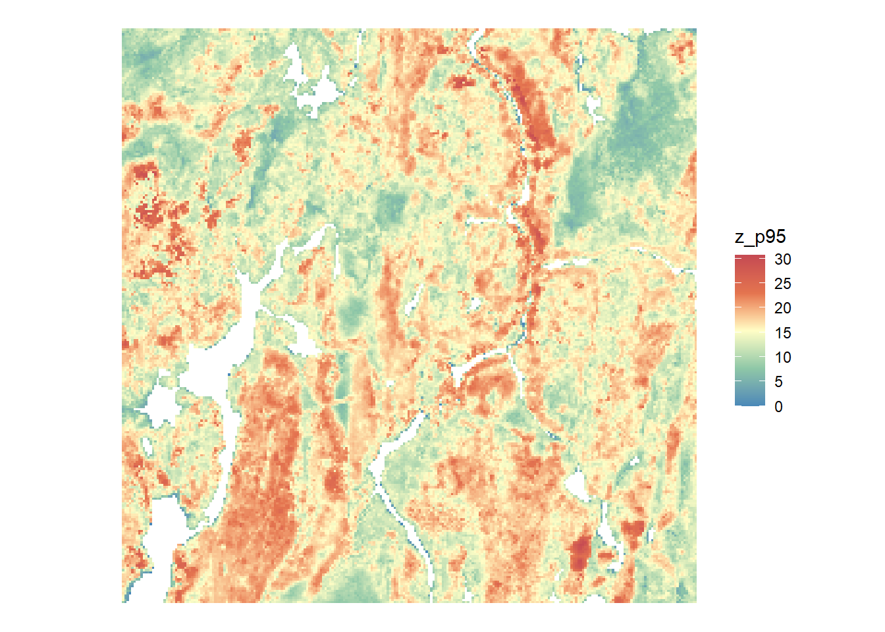
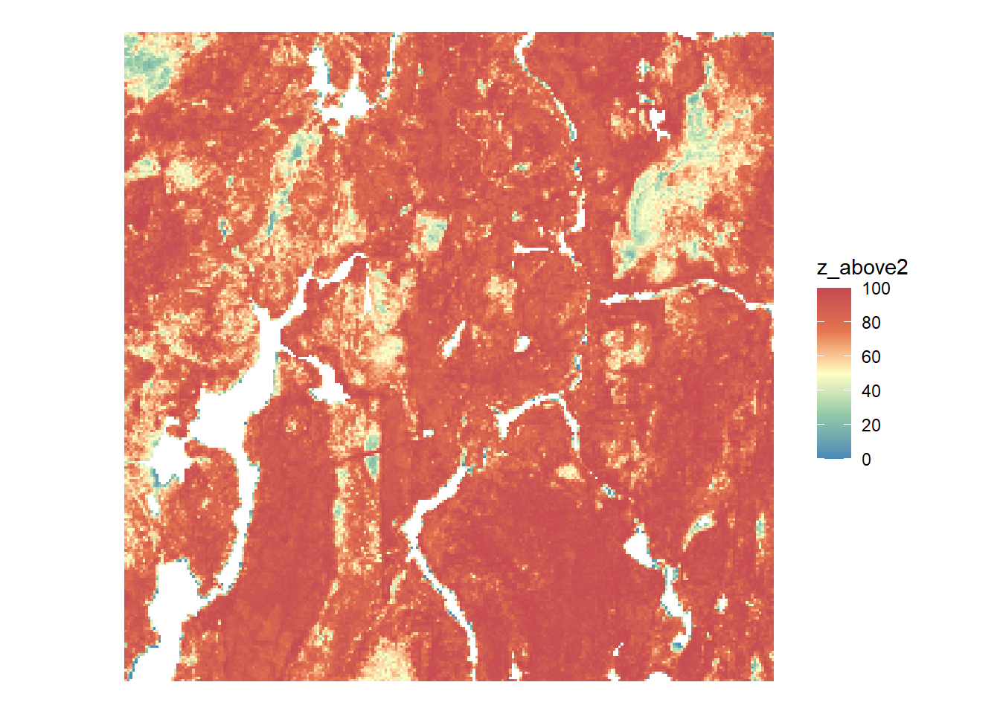
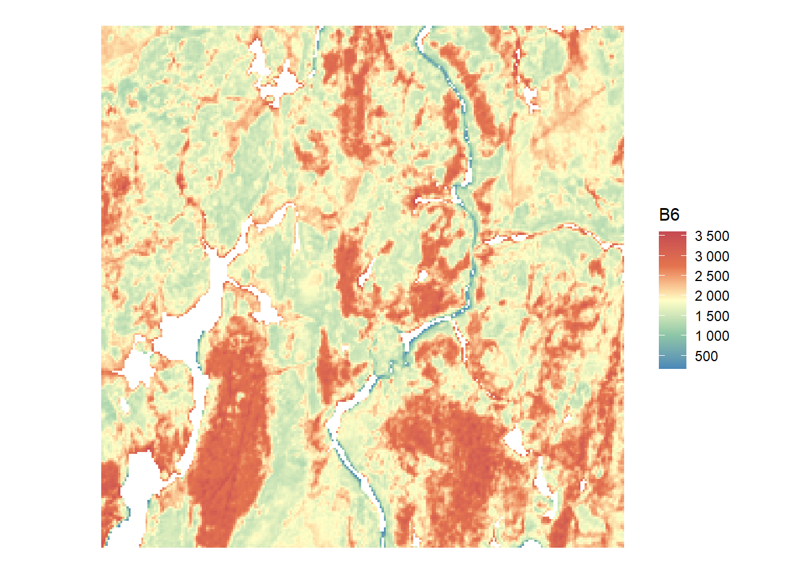
Parameters
Finally, the parameters tested are the following ones : 1. The threshold control maximum heterogeneity allowed when merging, controlling how fine or coarse the segmentation is : - Small threshold → fine segmentation (many small regions) - Large threshold → coarse segmentation (fewer, larger regions) - This parameter was tested with values ranging from 10 to 100 in increments of 10
- The weight of spectral homogeneity gives to spectral similarity (pixel values, band means) when deciding whether regions should merge :
- If high → segmentation will mostly respect spectral values
- If low → spectral similarity matters little, other criteria (shape) dominate
- This parameter was tested with values ranging from 0.1 to 1 in increments of 0.1
- The weight of spatial homogeneity gives to shape similarity (compactness and smoothness) when deciding whether regions should merge :
- If high → the algorithm favors compact, smooth regions even if spectral similarity is weaker
- If low → region boundaries will mostly follow spectral homogeneity
- This parameter was tested with values ranging from 0.1 to 1 in increments of 0.1
Thus, a total of 1000 paramaters combinaisons was tested.
Analysis
The three performance metrics are the following ones : 1. Symmetric mean absolute percentage error (SMAPE) of polygon density - The value is positive when the segmentation have a higher density than the photo-interpreted forest inventory map and negative when the segmentation have a lower density - In the example above, the SMAPE of the density is 0.17 as the photo-interpreted forest inventory map have a density of 7.25 polygon/km² (1465 polygons) and the segmentation a density of 8.59 polygon/km² (1650 polygons)
- Overlapping kernel density of the polygon stand area at the pixel level
- This performance metric represent how the distribution of the segmentation polygon stand area suit well the distribution of the photo-interpreted forest inventory polygon area
- Overlapping kernel density of the polygon stand shape index at the pixel level
- The same way as the last performance metric, this performance metric represent how the distribution of the segmentation polygon stand shape index suit well the distribution of the photo-interpreted forest inventory polygon shape index
- The shape index was computed with smoothed polygon to avoid overestimating the perimeter of polygons
The assumption behind this analysis is that the automated stand delineations should have the same distribution of polygon area and shape than the photo-interpreted forest inventory polygon and therefore be operationally plausible forest stand.
Results
The results presented here are, as mentionned before, in the Romeo Malette Forest for the model “SPL only” (z_p95 + z_above2 + B6). All the follow process can be made for every forest and every combinaison of metrics. The threshold of the SMAPE is 0.1 which represent more of less 10 % of polygon density variation. All sets of parameters that gave SMAPE lower than -0.1 and higher than 0.1 have been removed.
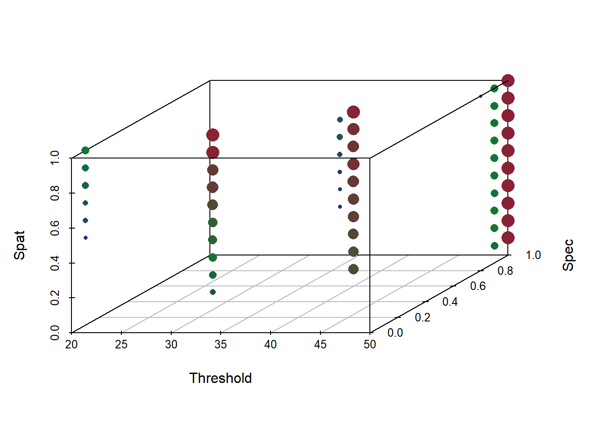
Figure x Symmetric mean absolute percentage error (SMAPE) of polygon density
After this step, the optimal parameters was choosen as the one that maximized both the overlap of the areas and the shape index.. The final score was computed as follow : - (0.5 x (1-overlap_area)) + (0.5 x (1-overlap_shape_index)) - the best parameters set was choosen as the lowest final score among all combinaison that had a SMAPE of polygon density of more of less 0.1. In the next figure, the red circle are the best paramaters.
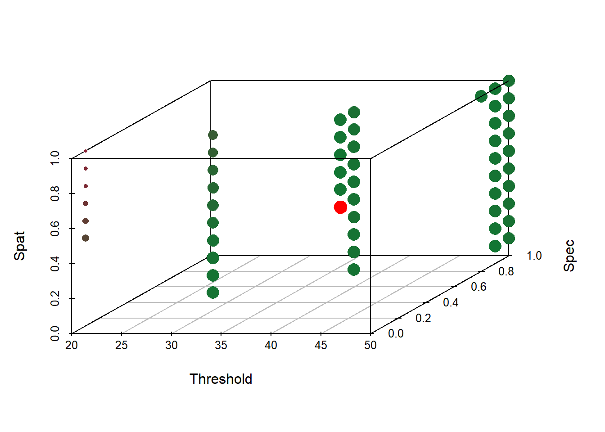
The next figure shows a example of a segmentation in the Romeo Malette Forest for the model SPL only (z_p95 + z_above2 + B6) with the best parameters as shown in the last figure (threshold of 40, spectral homogeneity of 0.5 and spatial homogeneity of 0.5). There is also a example of a segmentation that was smoothed as mentionned before.

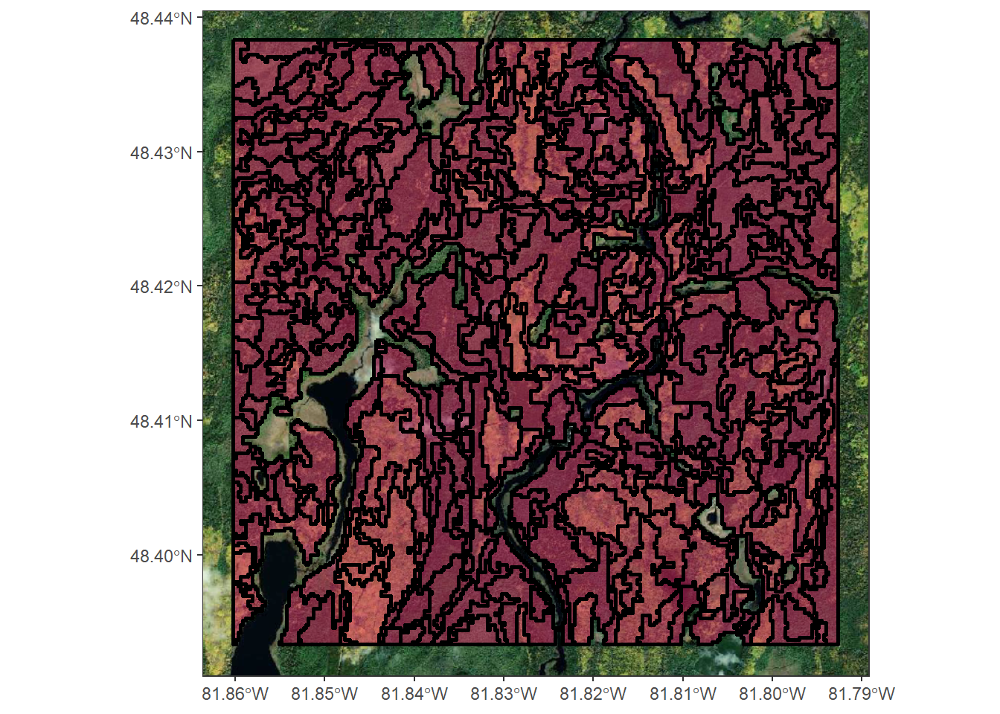
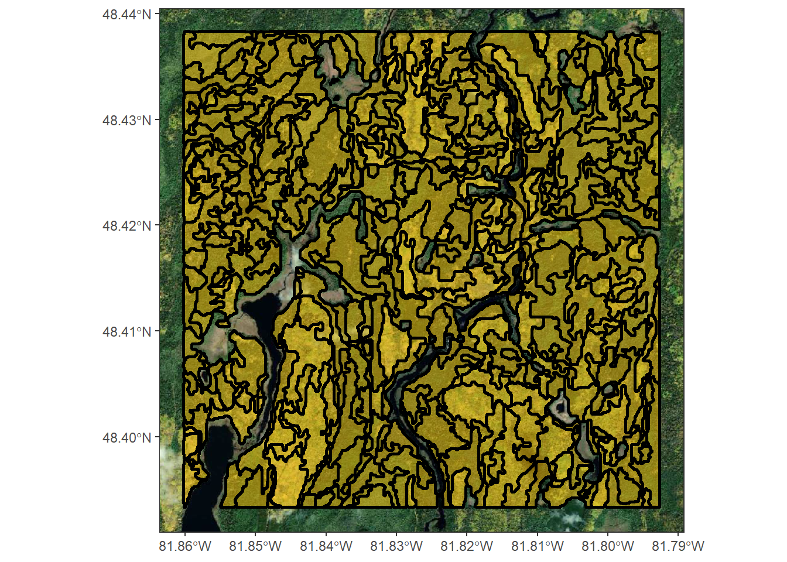
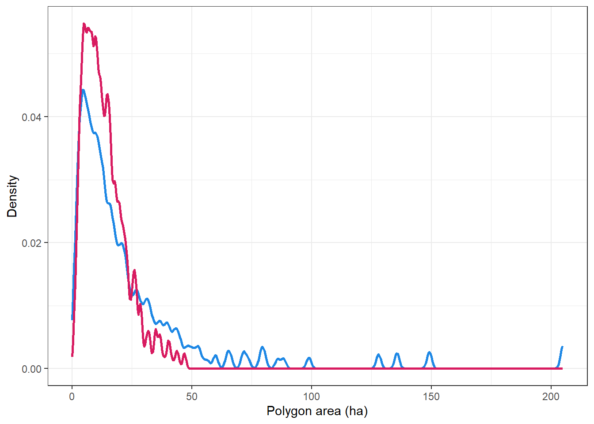
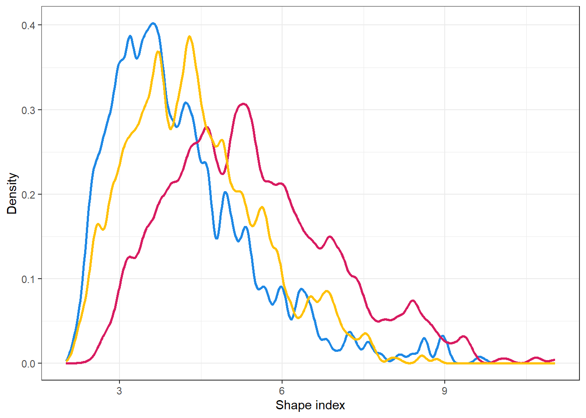